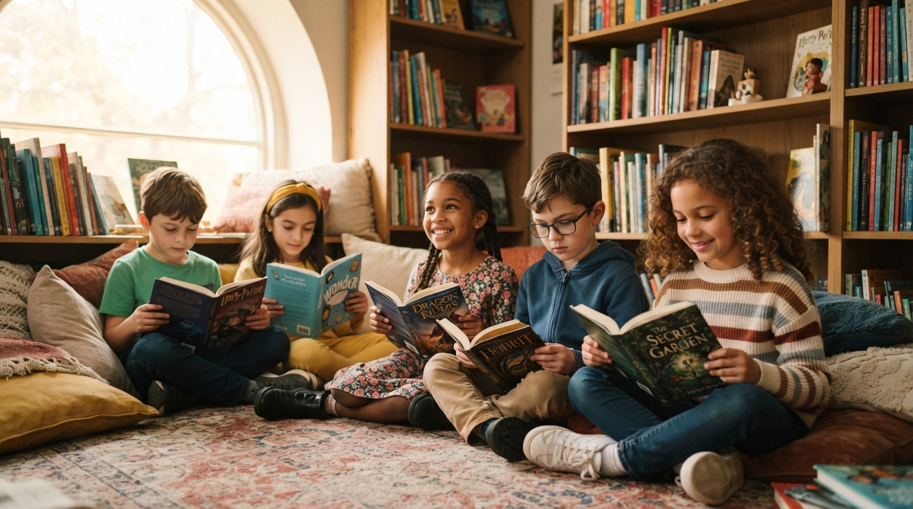

The Story Corner › Reading news
Kids' reading for fun is rising again. Here's how to keep it going at home

There is some good news for families who love books. The National Literacy Trust's 2026 Annual Literacy Survey, answered by more than 125,000 children and young people across the UK aged 5 to 18, found that reading enjoyment and daily reading have risen for the first time in five years, after hitting a 20-year low in 2025.
The lift is modest. Just over one in three children aged 8 to 18 (36.1%) said they enjoyed reading. Among the youngest readers, aged 5 to 8, enjoyment is still high at 61.6%, but it slipped slightly from the year before, and the drop came from boys. The survey also found the gap between children from lower-income families and their peers is widening.
The Trust's main lesson is simple: children read more in their free time when books connect to what they already care about.
What this means at home
- Follow their interests: dinosaurs, football, space, animals. Any topic is a way in.
- Count everything: comics, joke books, recipes and magazines are all real reading.
- Keep books within reach, in the car, by the bed, next to the sofa.
- Let them see you reading. Children copy what we do far more than what we say.
- For boys aged 5 to 8 especially, try funny books, comics and stories full of action.
Visit the library together once a month and let your child choose freely. Owning the choice is half the fun.
Sources

A gentle ocean adventure retelling the story of Prophet Yunus and his heartfelt dua, followed by mazes, matching and counting games, and a certificate to celebrate your little reader.
Buy on Amazon